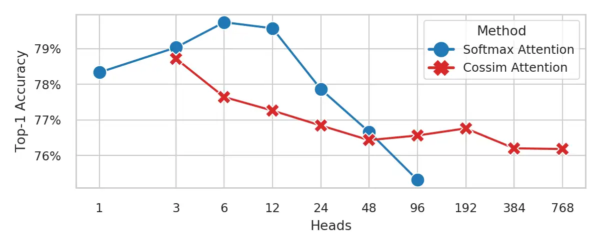

面试题随记
1 . 为什么Self-Attention要通过线性变换计算Q K V，背后的原理或直观解释是什么？
https://www.zhihu.com/question/592626839/answer/67210626639
https://www.zhihu.com/question/592626839/answer/3304714001
2. 为什么不增加 transformer 模型的attention模块中的头的数量？

Head 與 Top-1 Accurary 之間的關係 [1] Daniel Bolya, Cheng-Yang Fu, Xiaoliang Dai, Peizhao Zhang, & Judy Hoffman (2022). Hydra Attention: Efficient Attention with Many Heads_. Eccv Workshops_.
深入浅出完整解析Transformer核心 四种视角解读为什么head不是越多越好
3. 为什么transformer要用adam？
CUHK-SZ一篇最近的文章解决了这个问题
[2402.16788] Why Transformers Need Adam: A Hessian Perspective (arxiv.org)
大概就是每块的hessian不一样需要不一样的学习率，而adam的adaptivity刚好能满足这个要求